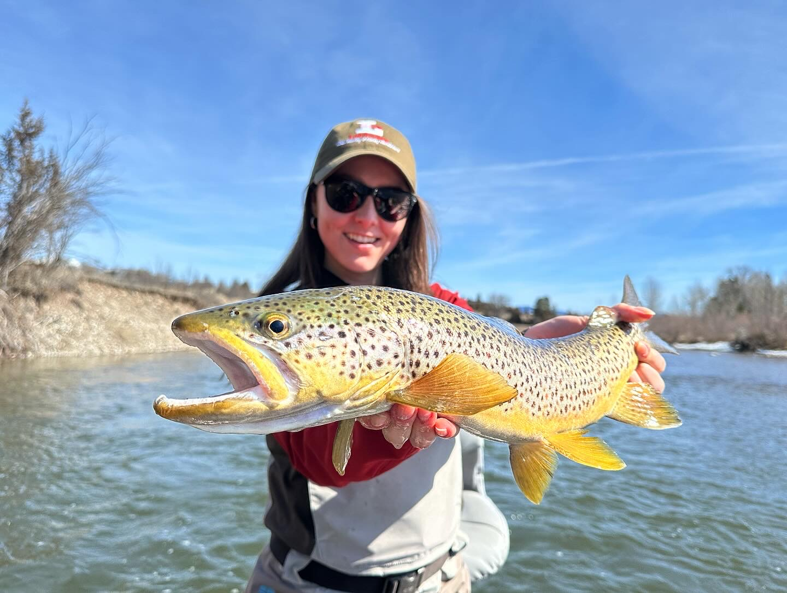

Trout of Montana

Brown Trout in Montana are freshwater fish known for their olive-green, brownish, and bright yellow coloring, scattered with black and sometimes reddish spots. They typically range from 12 to 20 inches, but can grow larger. They prefer cool, well-oxygenated waters in rivers, streams, lakes, and reservoirs, often seeking refuge in rocky areas. Opportunistic feeders, they eat insects, small fish, and terrestrial insects. Conservation efforts focus on maintaining healthy populations through catch-and-release practices and habitat restoration. As an angler, these are quite the prize, as they are a challenge to catch. I caught this brown trout on the Blackfoot River.

Rainbow Trout[c] in Montana are known for their vibrant colors, typically ranging from 10 to 20 inches in length. They inhabit rivers, streams, lakes, and reservoirs with cool, clean water, often seeking cover near submerged logs and boulders. Also opportunistic feeders, they consume aquatic insects, crustaceans, and small fish. Rainbow trout are beautiful and colorful, and offer a strong fight, making them a favorite of my to catch on a fly. This one was caught on the Missouri River.

Brook Trout[c] in Montana are characterized by their distinctive coloration, featuring a dark green to brownish body with worm-like markingson their back and sides, overlaid with red spots surrounded by blue halos. They have a white leading edge on their lower fins. These trout typically range from 8 to 14 inches in length. They prefer cold, clear waters of streams, rivers, and mountain lakes with plenty of cover such as fallen trees, rocks, and undercut banks. They consume a variety of prey including aquatic insects, small fish, and terrestrial insects like ants and beetles. They are most active during low light conditions and are known for their aggressiveness when feeding. They are admired for their striking appearance and exhilarating experience they provide when hooked. I caught this one on Georgetown Lake.

Bull Trout[c] in Montana are characterized by their olive-green to blue-gray back and sides, often with light spots scattered across their body. They have pale, creamy spots on their dark background, with a distinct white leading edge on their lower fins. These trout typically grow larger than other trout species, with adults often exceeding 20 inches in length. Bull trout prefer cold, clear waters of streams, rivers, and lakes, particularly in mountainous regions with abundant cover such as large rocks, logs, and deep pools. They are apex predators, feeding on a variety of prey including smaller fish, insects, and crustaceans. Due to their conservation status as a threatened species, special regulations are in place to protect bull trout populations in Montana. Conservation efforts focus on habitat restoration, connectivity preservation, and population monitoring to ensure their long-term survival. Caught on the Blackfoot River, this bull trout was a treat, as it was my biggest trout I've caught on a fly so far.

Cutthroat Trout[c] in Montana are known for their vibrant colors, with a distinctive red, orange, or yellow slash mark (the "cutthroat") on the underside of their jaw. They typically range from 10 to 20 inches in length, inhabiting various freshwater habitats, including rivers, streams, lakes, and mountainous creeks. These trout prefer cold, clear waters with plenty of cover, such as submerged logs, undercut banks, and rocky pools. These opportunistic feeders consume a variety of prey including aquatic insects, crustaceans, and small fish. Cutthroat trout are often admired for their beauty, and I always enjoy the exploring the pristine habitats they inhabit. This fish was caught on the Bitterroot River.